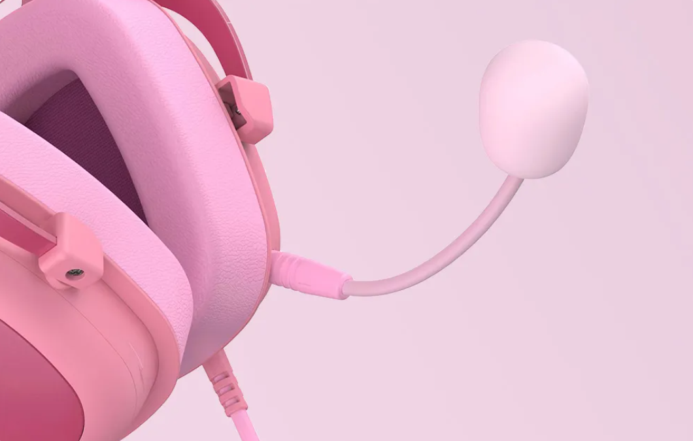
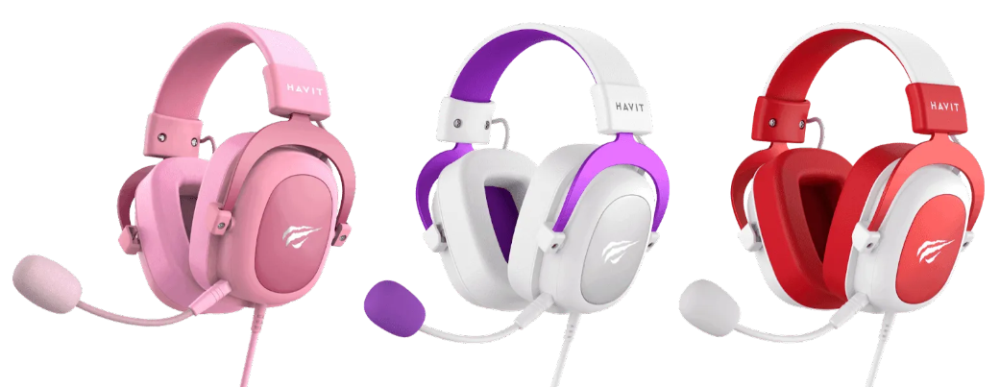

Опис Ігрових Навушників Havit H2002d
Цифровий стерео звук
Подвійний 53-мм динамік H2002D ігрової гарнітури забезпечує розширений і кришталево чистий звук для музики, гри і голосового чату.

Знімний мікрофон, що обертається на 360°
Якісний мікрофон забезпечує чудову командну комунікацію, а його можливість обертатися на 360° та зніматися робить їх практичними та зручними.
Вишуканий комфорт
М'які амбушюри з піни з ефектом пам'яті та регульоване оголів'я забезпечують максимальний комфорт, дозволяючи насолоджуватися грою без жодного дискомфорту.
Широка сумісність
Ці навушники підійдуть до всіх ваших улюблених геймінгових пристроїв (ПК, ноутбук, PS4, PS5, XBOX ONE), забезпечуючи найкращий звук для вашого віртуального світу.
Підключення
- через один 3,5 мм miniJack (сумісний вихід на динаміки і мікрофон);
- через подвійний 3,5 мм miniJack (окремо для динаміка і мікрофона).
Характеристики Havit H2002d
Підключення
- Спосіб підключення: дротовий
- Інтерфейс: 3.5 мм Mini-Jack
- Bluetooth: не підтримується
- Комплектація: інструкція, навушники
Конструкція
- Тип: повнорозмірні
- Діаметр динаміків: 53 мм
- Чашки: овальні
- Конструкція випромінювача: динамічна
- Тип кріплення: верхня дужка
Мікрофон
- Наявність: знімний, на дужці
- Шумозаглушення: відсутнє
- Чутливість: -42 дБ
- Кількість: 1
Звук
- Тип акустичного оформлення: закриті
- Частотний діапазон: 20 - 20000 Гц
- Чутливість: 110 дБ
- Опір: 64 Ом
- Активне шумопоглинання: відсутнє
Живлення
- Тип живлення: через кабель
- Акумулятор: відсутній
Аудіокабель
- Тип: односторонній
- Виконання: круглий
- Довжина: 2 м
- Форма штекера: прямий
Фізичні параметри
- Колір: рожевий
- Вага: 305 г
- Матеріал амбушюр: штучна шкіра
- Матеріал: пластик
Додаткові властивості
- Призначення: для музики, консолі, комп'ютера, ігор
- Оснащення: гнучкий мікрофон, регулятор гучності
Умови товару
Стан товару: Новий. Характеристики та комплектація можуть бути змінені виробником без попередження.